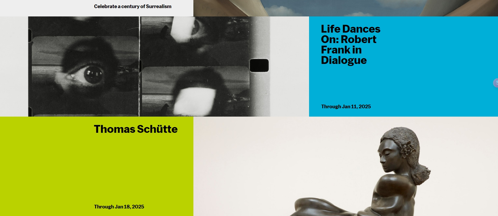

Learning Journal 3
The article from this week's reading emphasizes how we as a designer can engage with images in a way that goes beyond surface-level observation. This approach has been demonstrated through the visual layout of MoMA's, which expertly integrates visual design to guide users' experiences. The MoMA homepage utilizes a clean, minimalist design with ample white space, allowing artwork and exhibitions to take center stage. Its layout strategically directs users' attention through a visual hierarchy, leveraging large, impactful images that immediately communicate the museum's creative ethos. Additionally, the intuitive navigation system reinforces user engagement by encouraging exploration. The color palette is restrained, enhancing readability and focusing attention on featured content. In this sense, MoMA's website reflects close-reading principles by inviting users to observe, interpret, and engage with its content in a thoughtful, layered manner, much like the analysis of a complex photograph.
